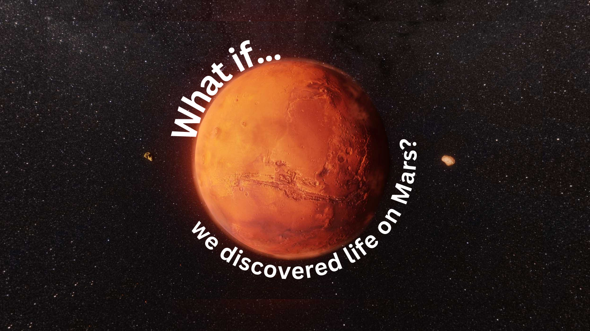

☰
This project aimed to locate potential areas where life could be found on Mars using ArcGIS
| The Result? | I ended up with the map below. The map shows Jezero Crater, a smaller area of Mars in the Syrtis Major region drawn with a reddish hillshade to more accurately convey the Martian surface. The blue and purple shaded regions show potential hotspots for life based on a site suitability analysis I conducted. The blue area represents the most suitable site while the purple illustrates the second most suitable location. |

Want to know more? Check these out!